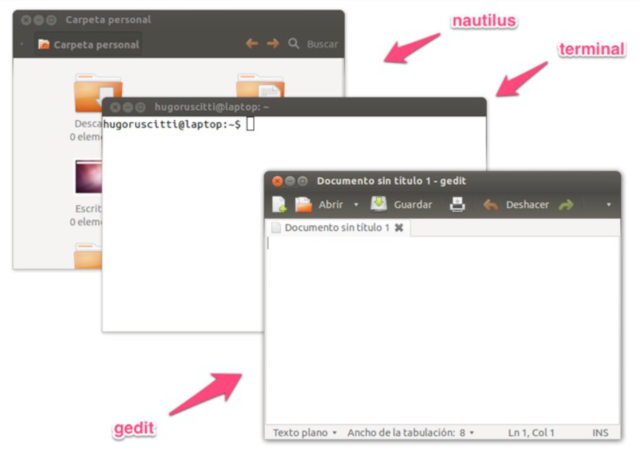
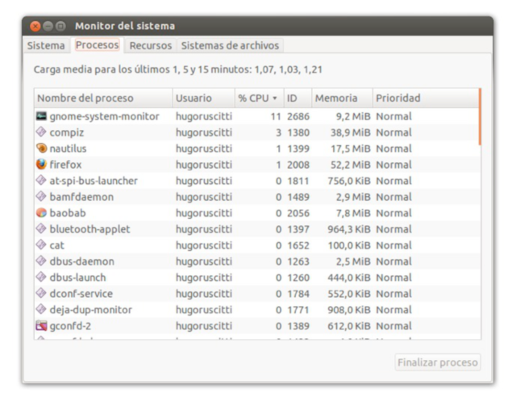
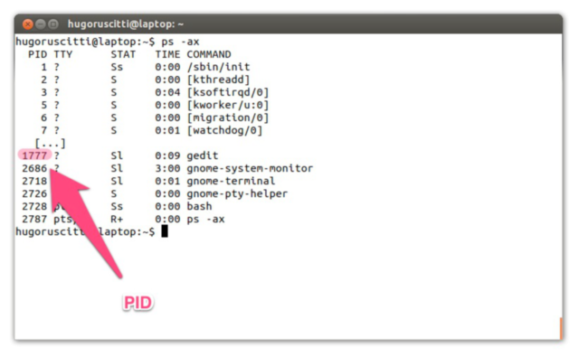
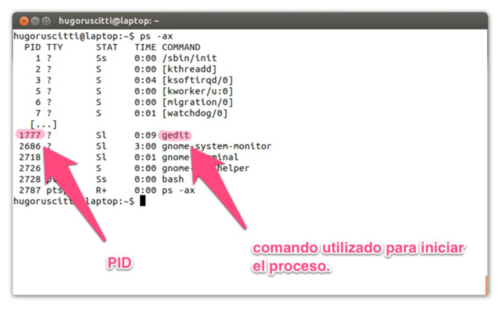
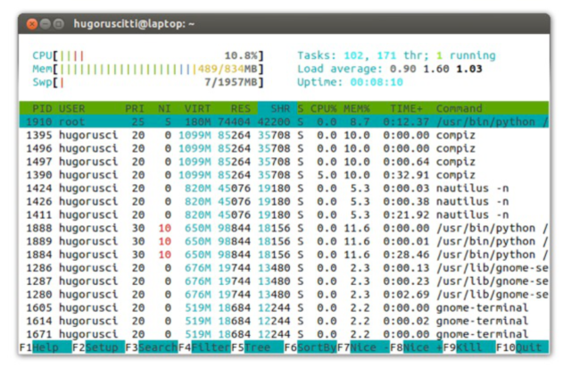

Procesos Linux
Índice
1 ¿Qué es proceso?
- Un proceso es la instancia de un programa en ejecución.
- También se lo conoce como tarea.
2 ¿Por qué?
- GNU/Linux es un sistema multitarea, permite la ejecución de múltiples procesos al mismo tiempo.
- Comprender el concepto de procesos nos permite administrar el rendimiento de nuestro equipo.
3 Lo que el usuario ve:

4 Lo que el sistema ve:


5 PID
- Todo proceso que se inicia tiene un número asignado llamado PID.
- Este PID permite identificar el proceso y administrarlo (detenerlo, reanudarlo etc…)
- Ejemplo: Para obtener el PID de un proceso podemos usar el
comando
pidof:pidof init emacs
1 30184
6 Listar procesos
El comando ps puede listar el estado de los procesos:

7 Operaciones
Los procesos se pueden controlar de manera externa.
El comando kill, xkill o killall permite enviarle señales a
los procesos. Por ejemplo la señal de terminación:

8 Jerarquía
El comando pstree nos permite ver la organización de los procesos en ejecución:
ps -fax | grep -A 10 bash | head
2669 ? S 47:11 /bin/bash /usr/share/siguibui/backend/shellserver.sh --daemon 16783 ? S 0:00 \_ sleep 1 2676 ? S 2:23 /usr/bin/python /usr/share/pywwetha/pywwetha.py --daemon 2682 ? Ss 0:00 /usr/sbin/acpi_fakekeyd 2799 ? Ss 0:19 /usr/sbin/acpid 2989 ? Ss 0:25 /usr/sbin/apache2 -k start 3175 ? S 0:00 \_ /usr/sbin/apache2 -k start 3176 ? S 0:00 \_ /usr/sbin/apache2 -k start 3177 ? S 0:00 \_ /usr/sbin/apache2 -k start 3178 ? S 0:00 \_ /usr/sbin/apache2 -k start
pstree -p -U | head
init(1)─┬─NetworkManager(3484)─┬─dhclient(14406)
│ ├─{NetworkManager}(3503)
│ └─{NetworkManager}(3670)
├─SystemToolsBack(5731)
├─accounts-daemon(3942)───{accounts-daemon}(3948)
├─acpi_fakekeyd(2682)
├─acpid(2799)
├─apache2(2989)─┬─apache2(3175)
│ ├─apache2(3176)
│ ├─apache2(3177)
9 En tiempo real
Para visualizar los procesos en ejecución, también se puede usar
htop o top:
export TERM=linux top -b -n1 | head -20
top - 09:36:32 up 8 days, 22:15, 7 users, load average: 0,86, 0,93, 0,90
Tasks: 198 total, 1 running, 197 sleeping, 0 stopped, 0 zombie
%Cpu(s): 14,4 us, 6,1 sy, 0,0 ni, 77,0 id, 1,6 wa, 0,6 hi, 0,3 si, 0,0 st
KiB Mem: 2044852 total, 1907656 used, 137196 free, 136240 buffers
KiB Swap: 0 total, 0 used, 0 free, 681620 cached
PID USER PR NI VIRT RES SHR S %CPU %MEM TIME+ COMMAND
16791 osiris 20 0 26096 1516 1080 R 11,7 0,1 0:00.03 top
1 root 20 0 10648 700 564 S 0,0 0,0 0:10.76 init
2 root 20 0 0 0 0 S 0,0 0,0 0:02.54 kthreadd
3 root 20 0 0 0 0 S 0,0 0,0 13:05.86 ksoftirqd/0
6 root rt 0 0 0 0 S 0,0 0,0 0:00.00 migration/0
7 root -2 0 0 0 0 S 0,0 0,0 3:19.31 rcuc/0
8 root rt 0 0 0 0 S 0,0 0,0 0:00.00 rcun/0
9 root -2 0 0 0 0 S 0,0 0,0 0:00.00 rcub/0
10 root rt 0 0 0 0 S 0,0 0,0 0:00.00 rcun/1
11 root -2 0 0 0 0 S 0,0 0,0 0:00.00 rcub/1
12 root rt 0 0 0 0 S 0,0 0,0 0:00.00 migration/1
14 root -2 0 0 0 0 S 0,0 0,0 4:54.16 rcuc/1
15 root 20 0 0 0 0 S 0,0 0,0 12:17.54 ksoftirqd/1

10 Resumen
- Los procesos son instancias de programas en funcionamiento.
- Los recursos del sistema son limitados, el sistema administra y hace posible compartir recursos.
- Cada proceso tiene un identificador (
PID), que nos sirve para enviar señales.